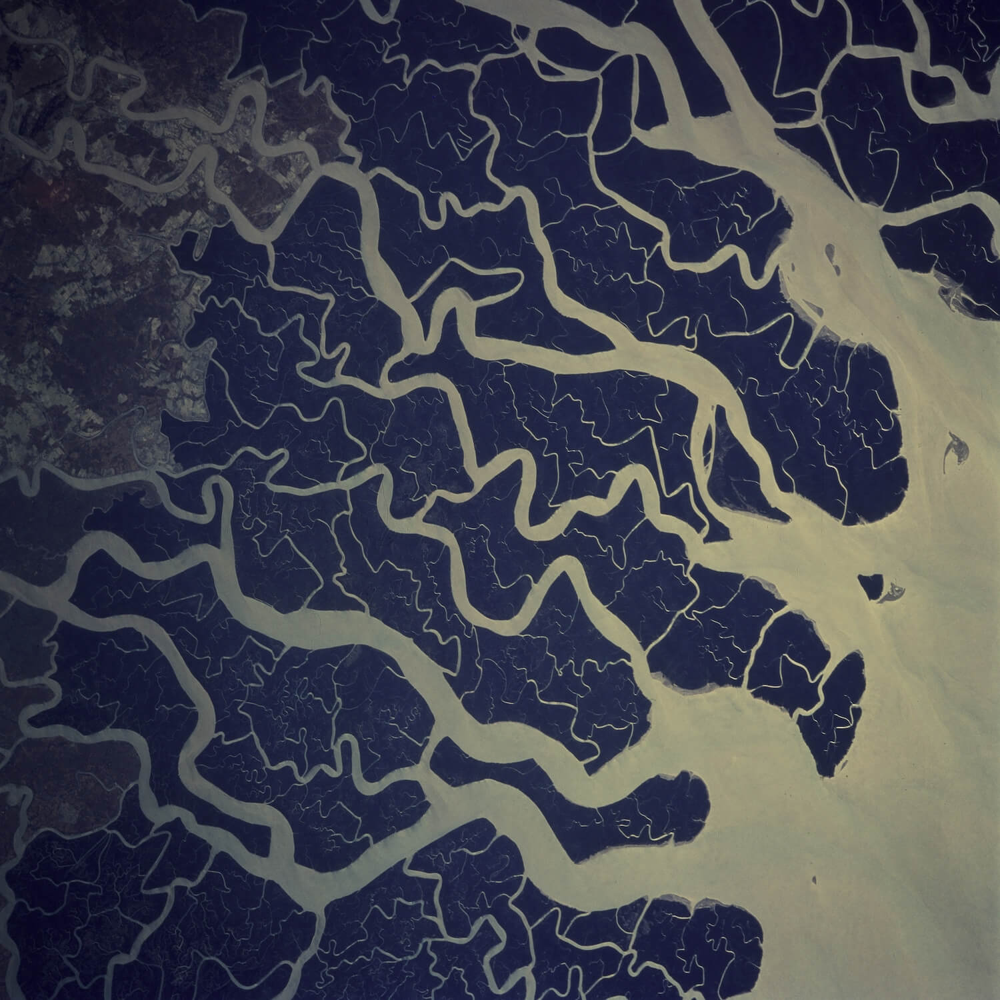
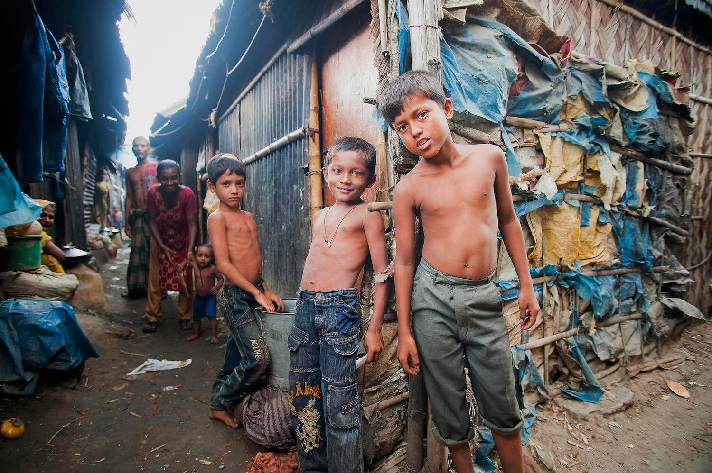

Southern Bangladesh is one of the most productive ecosystems in the world, receiving large amounts of freshwater and nutrient discharge from the Ganges, Brahmaputra and Meghna Rivers. However, these lands and those livelihoods which depend
on them, will soon be standing underwater.
The Intergovernmental Panel on Climate Change (IPCC) has described their 2021 report as a ‘code red for humanity’. Whilst climate change in the past has been a natural occurrence, this current rate of change has been directly caused by
human activity. The average global surface temperature is now officially 1.09°C warmer than what it was during the onset of the Second Industrial Revolution around 170 years ago.

Ganges River Delta, Bangladesh. | NASA / Flickr
The increasing global temperature, which the global community is lacking to mitigate, will lead to unprecedented rising sea levels and extreme weather events. If carbon emissions and habitat degradation do not stop, climate migration and
climate refugees will reach staggering numbers, due to the risks of flooding, heatwaves, wildfires and intense storms.
However, some people will be affected by climate change earlier than others, particularly poorer communities who live along the coastlines. Half of the world's population live within 60 kilometres of a coast, with three-quarters of the
world’s cities being located along a shoreline.
The Office of United National High Commissioner for Refugees, has estimated that around 24 million people worldwide have already been displaced due to famine, floods, extreme weather and environmental degradation. They project that by 2050,
the number of those displaced could reach up to 200 million, with a further 700 million livelihoods remaining under threat.
‘200 million people could become displaced by 2050 due to human-induced climate change.’
Bangladesh, nested within India and bordering Myanmar, is one of the most climate-stressed places in the world. It is a country of extremely low elevation, averaging less than 1.5 meters above sea level throughout. Due to this low
elevation, 80% of Bangladesh consists of floodplains, areas of land that are prone to flooding.
Additionally, Bangladesh has often been characterised as one of the ‘poorest countries in the world’, due to its history of weak institutions, low urbanisation and limited infrastructure. Around one-third of the population lives under the
poverty line, with two-thirds residing in rural, coastal areas.
Simultaneously, at a population of 166 million, the people of Bangladesh live very densely; the 35 million inhabitants of the country’s Southern Coast have a population density of 788 people per square kilometre. Thus, the combination of
poverty, low elevation and a riverine landscape will cause Bangladesh to feel the effects of climate change early on.
Many studies, as well as the IPCC itself, have now determined that under a ‘business-as-usual’ scenario, there will be average sea level rise (SLR) of 50 centimetres by 2050, and of one meter by the end of the century. If these scenarios
become a reality, the future of aquaculture, coastal infrastructure, coastal ecosystems and freshwater availability in Bangladesh is stark.
Ahsan and colleagues write what this projected scenario would mean for Bangladesh: ‘According to United Nations Framework on Climate Change with 1 meter of Sea Level Rise (SLR), approximately 15 million people, or 11% of the total coastal
region population, and 17,000 kilometres squared, or 18% of arable land, will be permanently submerged. Associated with this loss of land, 60% of the total population will be affected by flash floods.’
A 50 centimetre sea level rise would increase flooding in the Meghna and Ganges floodplains, resulting in a loss of the region’s crop yield. Furthermore, 40% of the Sundarbans mangrove forest would be completely submerged and cyclone storm
intensity over the country would increase by 10%. A one meter increase in sea surface level would in turn cause intense flooding, yearly crop failure and a total loss of the Sundarbans.
‘15 million people and 18% of arable land will be permanently submerged.’
Aside from completely submerging vast areas of land, increasing sea surface levels leads to higher rates of soil erosion; where water loosens top soil and causes the further collapse of land mass. An area that will particularly be affected
is Bangladesh’s central coastal zone, which already has high erosion rates due to high discharge and strong currents.
Sundarbans is the world’s largest mangrove ecosystem. It is due to the integral role of this mangrove forest, that the western coastal zones of Bangladesh are relatively stable in terms of soil erosion, unlike the previously mentioned
central coastal zone. It also plays a vital part in the country’s aquaculture industry, as mangroves provide homes and nurseries to fish biodiversity, securing income for 10 million people.
However, continuous soil intrusion will negatively impact the delicate balance of mangrove ecosystems; a place where freshwater and saltwater meet. The weakening of mangrove forests due to excess salt will decrease their ability to
stabilise land mass. Moreover, Top Dying Disease, a disease which is killing the dominant mangroves in Sundarban, are shown to be directly linked to increasing salinity.
Subsistence farmer driving a tractor along rice paddy fields in Comilla, Bangladesh. | Md. Golam Murshed / Unsplash
Sea level rise and land subsidence, the sinking of ground surfaces, is also reducing freshwater flow into southwestern Bangladesh. This is leading farmers to rely on irrigation systems to supply both households and industry with water,
which in a vicious cycle further increases salinisation, erosion and soil nutrient depletion.
High salinisation interferes with nitrogen uptake, reduces water absorption, interferes with growth and reproduction of crops. Models predict that the increasing trends in salinity, due to both seawater intrusion and dependence of
irrigation, will decrease the output of the most high-yielding rice variety in coastal Bangladesh.
Rice is a staple crop for around 135 million people in the country. The industry employs 48% of the rural population, making up 28% of the country’s GDP. In order to meet Bangladesh’s food demand, 75% of the country’s cropland is dedicated
to rice paddy fields.
In 2000, the World Bank already predicted that the increase in salinity resulting from a 0.3 meter sea level rise would cause a reduction of 0.5 million metric tonnes of rice yields. Specifically, areas prone to high salinity, such as the
Khulna, Barisal and Chittagong regions, are expected to experience a 15.6%, 10.5% and 7.5% reduction in rice production before 2050, respectively.
What do these climate projections mean for the coastal people of Bangladesh?
A one meter sea level rise would leave 14.8 million Bangladeshi homeless. Most people in rural Bangladesh are subsistence farmers, who continuously have to abandon their homes due to challenges such as flooding, cyclones, river bank
erosion, salinisation and sea level rise.
Amelie Bernzen, who with her team researched migration trends in Bangladesh, writes ‘other human interventions, such as the diversion of the Ganges River at the Farakka Barrage and the conversion of rice paddies into saltwater shrimp
farming, are contributing to salinization and greater environmental stress, seen by many as drivers of rural out-migration.’
Annually 300,000 to 400,000 people migrate to Dhaka, the capital of Bangladesh, for both pull and push factors; pull being to improve economic prospects, push being poverty and natural disasters. A recent survey found that of those who
migrated in Bangladesh due to extreme climate events between 1980 to 2010, 50% were displaced due to cyclones, 5% due to river erosion and 5% due to flooding.
Additionally, 40% moved due to soil infertility resulting from increased soil salinity. This was particularly common between 1981 to 1993, where there was a period of extremely high soil erosion around Jamuna River, leading people to be
displaced up to ten times.

Children in Kallyanpur, one of the urban slums in Dhaka, Bangladesh. | Kibae Park / UN Photo
Bangladesh is currently the country with the highest rate of urban population growth, as two-thirds of permanent migration is in the rural-to-urban direction. In 1984, 1.2 persons per 1000 people were moving to urbanised areas in search of
employment. In 2021 it is now being recorded that 22.5 persons per 1000 people are moving to the cities.
However, city life is not a simple or glamorous solution for climate refugees. 40% to 50% of the slum population in Bangladesh, particularly surrounding Dhaka, are from rural communities. Most of these people have moved inland as a
last-resort option due to flood risks. Here, they live in self-made squatter accommodations, made out of scraps of bamboo, plastic bags and mud, whilst having little to no access to sanitation or safe drinking water.
Those who left their livelihoods behind are trained for agricultural and aquaculture jobs, once well-suited to the coastlines of Bangladesh. In a new urbanised setting, they need to adapt to a new source of income—and being untrained
creates a lack of job security amongst climate migrants.
Climate refugees are bound to increase if humanity continues to consume resources in the way we do. Whilst those of us who are lucky to possess passports and income security may be able to escape threats while we can, it is not an option
for those in poverty. Unfortunately, the effects of climate change will be experienced unevenly along the gradient of wealth disparity.
Although in the end, nature does not discriminate, as we have been witnissing in the extreme weather events across the globe this momentous summer.
Featured Image: Hasib Matiur | Unsplash
Ahsan R., Kellett J. And Karuppannan S. (2016) Climate migration and urban changes in Bangladesh. Urban Disasters and Resilience in Asia. Pages 293-316.
Bernzen A., Jenkins C. And Braun B. (2019) Climate change-induced migration in coastal Bangladesh? A critical assessment of migration drivers in rural households under economic and environmental stress. Geosciences. Volume
9, issue 51.